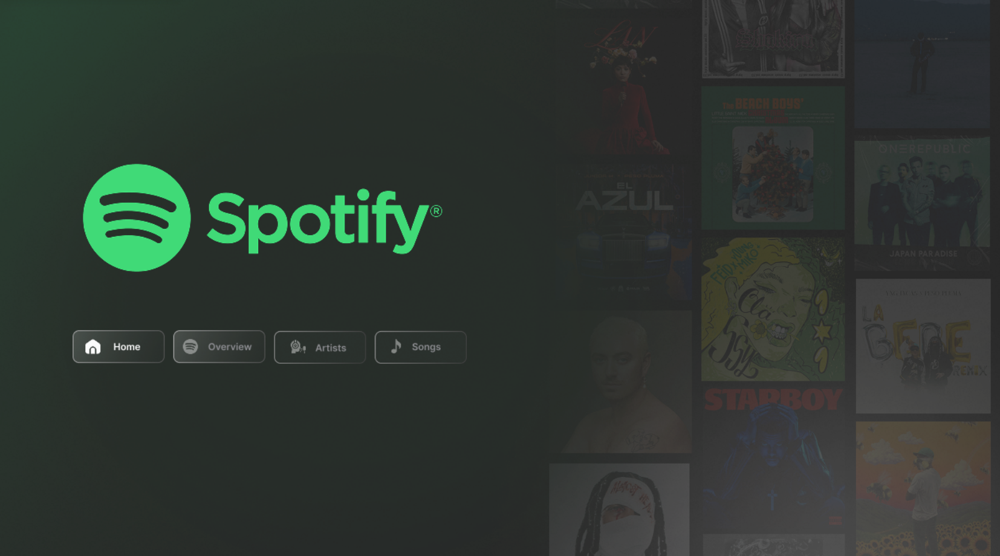
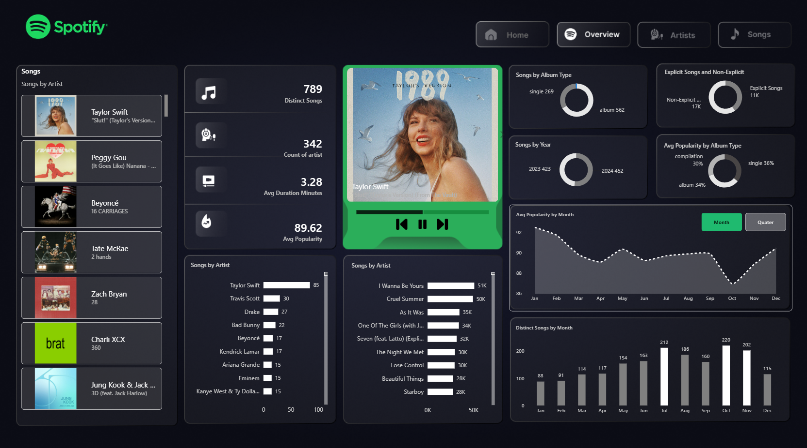
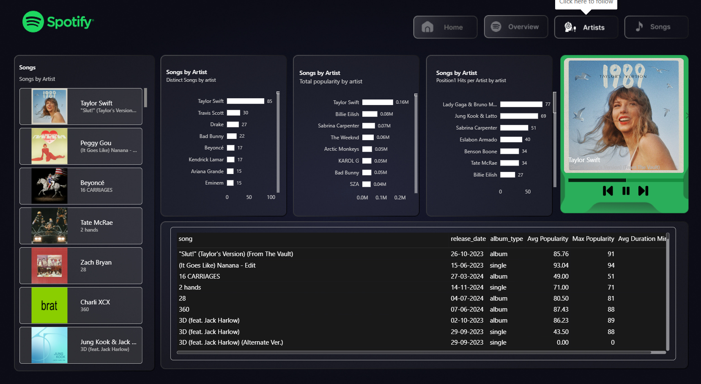
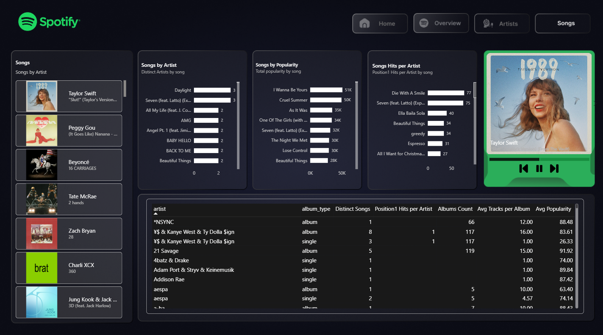

An interactive Spotify Analytics Dashboard built using Power BI to analyze songs, artists, albums and popularity through dynamic visualizations.
Download PBIX Dataset GitHubThis project recreates my earlier Spotify Analytics Dashboard built in Excel, this time using Power BI with interactive navigation, Power Query transformations, DAX measures and dynamic visuals.
Power BI • Power Query • DAX • Data Modeling • Data Visualization



